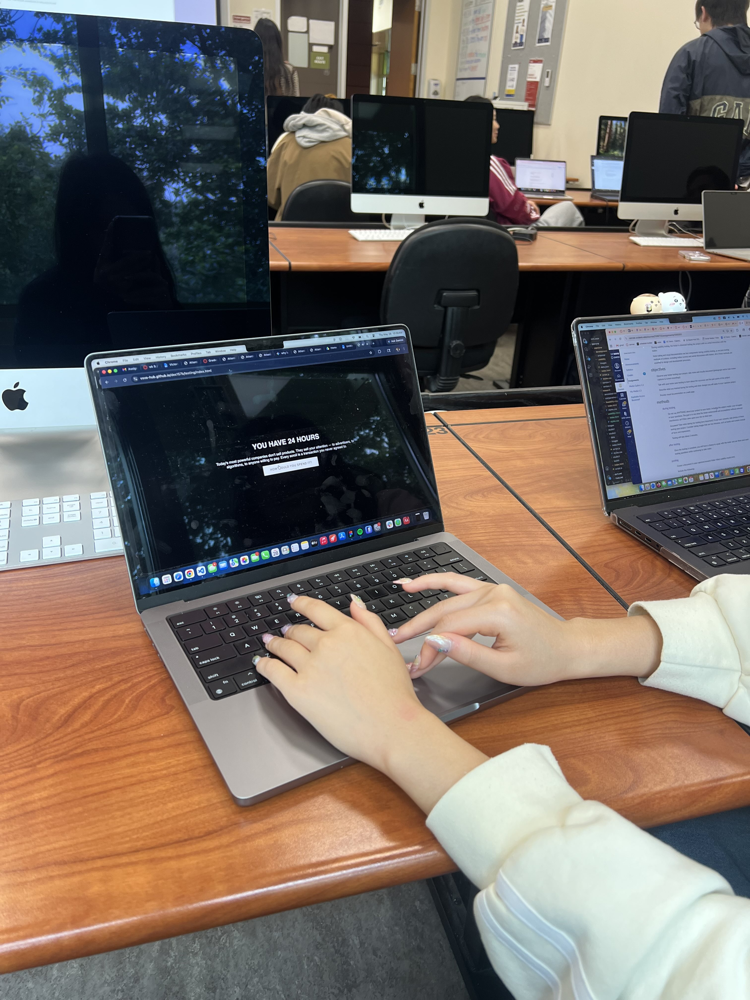

After conducting usability testing, I found that the main functions of the project (schedule building, animations, review) still need to be developed.
Most of the users had difficulty interacting with the project because of limited development, but were able to navigate through different screens.
The message and purpose of my project was clear from the context given in the beginning and reflection page. Each of the users understood what the overall intention of my project was.
In order to modify my project to be stronger, I need to further develop the interactions for dragging and dropping activities into the 24 hour day. I also need to stylize the webpage with CSS to match my original wireframes.
After receiving feedback, I plan on adding more visual elements to my project such as icons or illustrations, and exploring incorporating sound effects for different interactions. I also want to try out different forms of typography to further contribute to the sense of urgency and losing time. Another piece of feedback I’m considering incorporating is allowing the user to add their own custom time block.
